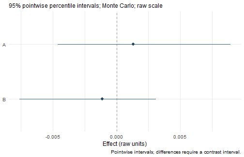
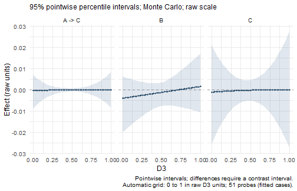

The staged interface separates model specification, fitting, and
inference. You can inspect the output after each stage and reuse it in
the next one. This guide follows one parallel-mediation example through
those three stages, then shows how to read and extract the results.
wsMed() remains available for completing the analysis in
one call, as shown in Get started.
The workflow at a glance
| Stage and call | Returned object | What is available |
|---|---|---|
1. Specifywsmed_model()
|
model: a wsmed_model
|
Variable pairs, condition order, mediator structure, covariates and moderator settings. |
2. Fitwsmed_fit(model, data)
|
fit: a wsmed_fit
|
Fitted parameters and native SEs, prepared data, model syntax, backend fits and diagnostics. |
3. Inferwsmed_infer(fit)
|
inference: a wsmed_inference
|
The original fit, joint draws, inference settings and draw diagnostics. |
4. Read or
extractsummary(inference) or
wsmed_effects(inference)
|
A summary or wsmed_results
|
Effect estimates, SEs, CIs, effect draws and reporting settings. |
The first three steps create the analysis objects. The fourth uses those objects to produce tables, plots and contrasts; it does not fit or sample again. At each step below, start with the default display and use the extraction examples only when you need the underlying values.
data(example_data)These simulated data are complete and in wide format, with one row per participant. A1/A2 and B1/B2 are the mediator pairs; D1/D2 are the outcome pair.
1. Specify the model
Use wsmed_model() to describe the analysis before
supplying data. Name each pair with the same two conditions. Here, every
difference is after minus before. The names A and B
identify the mediator roles in paths and output.
model <- wsmed_model(
outcome = c(before = "D1", after = "D2"),
mediators = list(
A = c(before = "A1", after = "A2"),
B = c(before = "B1", after = "B2")
)
)
print(model)
#> wsMed model: P
#> Difference: after - before
#> Mediators: A, BParallel mediation is the default. The main specification arguments are:
| Argument | What it specifies |
|---|---|
outcome |
A named pair of outcome columns. Its order defines the condition contrast. |
mediators |
A named list of mediator pairs. Order determines mediator numbering. |
structure |
"parallel", "serial",
"serial_parallel", "parallel_serial", or
"custom". |
paths |
For custom models, arrows using mediator role names and
Y, such as "A -> B" and
"B -> Y". |
covariates |
A list with between column names and/or
within named pairs. |
moderator |
A list specifying the moderator column and the paths with interactions. |
What can you inspect now?
specification <- wsmed_inspect(model, "model")
specification$conditions
#> [1] "before" "after"
specification$mediator_names
#> [1] "A" "B"
column_map <- specification$input_vars| Item | Access |
|---|---|
| Complete specification | wsmed_inspect(model, "model") |
| Condition names and order | model$conditions |
| Mediator role names | model$mediator_names |
| Paired columns and predictor settings | model$input_vars |
| Model-form code and custom edges |
model$form, model$paths
|
This object contains no observations, fitted estimates or CIs. Model syntax, transformed data and fit diagnostics become available after fitting.
2. Fit the model
Pass the specification and the wide dataset to
wsmed_fit():
fit <- wsmed_fit(
model,
data = example_data
)
print(fit)
#> wsMed fit: P | DE | 1 fitted dataset(s)
#> Observations: 100 of 100 input rows
#> Converged: 1 of 1
#> Condition contrast: after - before
#> Post-fit admissibility: 1 of 1 ; excluded rows: 0print(fit) reports the sample size, convergence and
diagnostic summary. The fitting default is
missing = "error", so missing analysis values require an
explicit choice of "listwise", "fiml", or
"mi". This differs from the listwise-deletion default of
wsMed(); it makes no difference for the complete data used
here. Missing-data examples appear below.
For the fitted parameter estimates and their native SEs:
fit_summary <- summary(fit)
print(fit_summary)
#> wsMed fitted parameters (DE)
#> Standard errors from fitted parameter covariance; confidence intervals require inference.
#> Condition contrast: after - before
#> Post-fit admissibility: 1 of 1 ; excluded rows: 0
#> Estimate Std. Error
#> cp -3.18e-02 1.70e-02
#> b1 -4.83e-02 9.56e-02
#> d1 -6.91e-02 9.52e-02
#> b2 -7.73e-02 9.33e-02
#> d2 -3.68e-02 8.68e-02
#> a1 -2.71e-02 1.75e-02
#> a2 1.45e-02 1.80e-02
#> Ydiff~~Ydiff 2.81e-02 3.97e-03
#> M1diff~~M1diff 3.08e-02 4.35e-03
#> M2diff~~M2diff 3.23e-02 4.56e-03
#> M1avg~~M1avg 3.39e-02 4.79e-03
#> M1avg~~M2avg 1.08e-02 3.87e-03
#> M2avg~~M2avg 4.07e-02 5.76e-03
#> M1avg~1 -2.22e-18 1.84e-02
#> M2avg~1 3.22e-17 2.02e-02These are the SEM’s fitted parameters, including regression coefficients, intercepts and variances. Their SEs come from the fitted parameter covariance matrix, or Rubin pooling after MI. They are available before simulation.
What can you extract from the fit?
| Item | Access | Returned value |
|---|---|---|
| Parameter estimates | coef(fit) |
Named numeric vector. |
| Parameter estimates and native SEs | fit_summary$coefficients |
Numeric matrix. |
| Parameter covariance | vcov(fit) |
Covariance matrix; Rubin-pooled after MI. |
| Number of fitted observations | nobs(fit) |
One count per fitted dataset. |
| Generated model syntax | wsmed_inspect(fit, "syntax") |
Character string. |
| Prepared analysis variables | wsmed_inspect(fit, "data") |
Data frame of differences, centered averages and other required variables. |
| Backend models | wsmed_inspect(fit, "fits") |
List of lavaan fits; one per imputation for MI. |
| Fit checks and warnings | wsmed_inspect(fit, "diagnostics") |
Diagnostic list, including a by_dataset table. |
| Recorded fitting information | wsmed_inspect(fit, "provenance") |
Recorded software and fitting metadata. |
For example, save the estimates, covariance and prepared data for further work:
parameter_estimates <- coef(fit)
parameter_covariance <- vcov(fit)
prepared_data <- wsmed_inspect(fit, "data")
nobs(fit)
#> [1] 100
head(prepared_data)
#> Ydiff M1diff M2diff M1avg M2avg
#> 1 -0.21677139 -0.1722935 0.16068969 -0.1000090 -0.35166874
#> 2 0.39173048 -0.2088457 0.06815762 -0.3091593 -0.23200291
#> 3 0.37078168 -0.0395939 0.04733066 -0.3458011 -0.20683550
#> 4 -0.09494456 -0.3903959 -0.17175804 -0.1643716 0.01018087
#> 5 -0.10497217 0.2522317 -0.20559112 0.1062956 0.02496926
#> 6 -0.14741498 -0.1956271 -0.04948771 0.1311617 0.21555420Inspect the generated equations and check the fitted datasets:
cat(wsmed_inspect(fit, "syntax"))
#> Ydiff ~ cp*1 + b1*M1diff + d1*M1avg + b2*M2diff + d2*M2avg
#> M1diff ~ a1*1
#> M2diff ~ a2*1
#> indirect_1 := a1 * b1
#> indirect_2 := a2 * b2
#> total_indirect := indirect_1 + indirect_2
#> total_effect := cp + total_indirect
fit_checks <- wsmed_inspect(fit, "diagnostics")
fit_checks$by_dataset[c("dataset", "n.used", "converged", "admissible", "warnings")]
#> dataset n.used converged admissible warnings
#> 1 1 100 TRUE TRUE 0
fit_checks$warnings
#> character(0)converged records whether estimation converged;
admissible records the backend post-fit check. Review
warnings and failed checks before proceeding. Convergence alone does not
establish that the model or missing-data assumptions are appropriate.
For additional backend diagnostics, retrieve the fits with
wsmed_inspect(fit, "fits") and inspect the relevant fitted
dataset.
You can also obtain effect point estimates before inference:
point_effects <- wsmed_effects(fit)
print(point_effects)
#> wsMed indirect | raw scale | point
#> Point estimates only; no simulation-based SE or intervals.
#> Condition contrast: after - before
#> Estimate
#> indirect_1: A 0.00131
#> indirect_2: B -0.00112
#> Use as.data.frame() for the full-precision table and metadata.This defaults to the specific indirect effects. No simulation-based
effect SEs or CIs are available yet. confint(fit) therefore
asks you to run wsmed_infer() first; plot(fit)
likewise shows point estimates only.
3. Perform inference
Pass the existing fit to wsmed_infer():
inference <- wsmed_infer(
fit,
seed = 123
)
print(inference)
#> wsMed inference: mc | 20000 valid draws of 20000 requested
#> 95% effect intervals: percentile; stored parameter-table convention: percentile
#> Inference draws: 20000 retained of 20000 ; 0 excluded before effect extraction.
#> Use summary() or wsmed_effects() to select effects.The defaults are Monte Carlo inference, 20,000 draws and 95% CIs. The
seed is specified for reproducibility; the staged default is
seed = NULL. print(inference) reports the
inference method and the number of retained draws. It does not display
the effect table; use summary(inference) next.
What can you extract from inference?
| Item | Access | Meaning |
|---|---|---|
| Original fitted model | inference$fit |
The wsmed_fit supplied to this stage. |
| Joint draws | inference$draws |
One draw per row; columns contain parameters and generated effect definitions. |
| Draw identities | inference$draw_ids |
Original identities of retained draws. |
| Method and settings |
inference$method, inference$controls
|
Draw count, seed, confidence level and other inference controls. |
| Inference checks | wsmed_inspect(inference, "diagnostics") |
Requested, retained and invalid draws, plus recorded warnings. |
| Parameter point estimates | coef(inference) |
The same fitted parameter estimates as coef(fit). |
| Empirical parameter covariance | vcov(inference) |
Covariance of stored draws for the model parameters. |
| Parameter CIs | confint(inference) |
Percentile CIs for model parameters. |
For a compact view of the stored joint draws:
joint_draws <- inference$draws
dim(joint_draws)
#> [1] 20000 19
head(
joint_draws[, c("a1", "b1", "indirect_1")],
n = 3
)
#> a1 b1 indirect_1
#> [1,] -0.003646698 0.03051870 -0.0001112925
#> [2,] -0.008944494 -0.02753057 0.0002462470
#> [3,] -0.011483156 0.15272658 -0.0017537831
inference_checks <- wsmed_inspect(inference, "diagnostics")
inference_checks[c("requested", "valid", "invalid")]
#> $requested
#> [1] 20000
#>
#> $valid
#> [1] 20000
#>
#> $invalid
#> [1] 0The coefficients within a row belong to the same draw. Keeping that pairing is necessary when forming products or contrasts. Point estimates remain those computed from the fitted model; they are not replaced by averages of the draws. For conditional or standardized effect draws, use the result object in step 4, which applies the requested transformations and records any additional exclusions.
wsmed_inspect(inference, "diagnostics") describes
inference. To recover the fitting checks, use
wsmed_inspect(inference$fit, "diagnostics").
4. Read and extract effect results
Start with the default statistical summary and plot:
s <- summary(inference)
print(s)
#> wsMed statistical summary
#> Model: P | Missing: DE | Observations: 100
#> Effects:
#> wsMed all | raw scale | mc
#> 95% percentile intervals; 20000 joint draws; SE from effect draws
#> Condition contrast: after - before
#> Estimate Std. Error CI lower CI upper
#> cp: Direct effect -0.031795 0.017000 -0.064525 0.001864
#> indirect_1: A 0.001311 0.003208 -0.004601 0.008917
#> indirect_2: B -0.001120 0.002570 -0.007617 0.003084
#> total_indirect: Total indirect effect 0.000191 0.004111 -0.008172 0.008783
#> total: Total effect -0.031604 0.017015 -0.064740 0.001839
#> Inference draws: 20000 retained of 20000 ; 0 excluded before effect extraction.
#> Use as.data.frame() for the full-precision table and metadata.
#>
#> Path coefficients:
#> Estimate Std. Error CI lower CI upper
#> cp -0.03180 0.01700 -0.06453 0.00186
#> b1 -0.04834 0.09555 -0.23422 0.13918
#> d1 -0.06905 0.09508 -0.25772 0.11690
#> b2 -0.07732 0.09387 -0.26459 0.10461
#> d2 -0.03676 0.08692 -0.20641 0.13385
#> a1 -0.02712 0.01772 -0.06242 0.00737
#> a2 0.01448 0.01796 -0.02033 0.04929
#> Post-fit admissibility: 1 of 1 ; excluded rows: 0
#> Tables: $effects, $coefficients; analysis settings: $info.
plot(inference)
The summary displays the direct effect, specific indirect effects, total indirect effect and total effect, followed by path coefficients. The default plot displays the specific indirect effects. Each effect SE is the sample SD of its draws, and its CI is a percentile interval from those draws.
What can you extract from the summary?
| Item | Access |
|---|---|
| Effect table: estimates, SEs, CIs and metadata |
s$effects or as.data.frame(s)
|
| Path-coefficient table | s$coefficients |
| Reporting settings: method, scale, confidence level and probes | s$info |
| Selected effect estimates | coef(s) |
| Selected effect CIs | confint(s) |
| Covariance of selected effect draws | vcov(s) |
| Joint draws for the selected effects | s$draws |
| Draw identities and effect-level exclusions |
s$draw_ids, s$diagnostics
|
| Fitting diagnostics retained in the summary | s$fit_diagnostics |
For example, retain just the effect name, estimate, SE and CI columns:
effect_table <- as.data.frame(s)
columns <- c(
"label",
"estimate",
"std.error",
"conf.low",
"conf.high"
)
effect_table[, columns]
#> label estimate std.error conf.low conf.high
#> 1 Direct effect -0.0317954295 0.016999696 -0.064525051 0.001863739
#> 2 A 0.0013113045 0.003207828 -0.004600745 0.008917406
#> 3 B -0.0011199168 0.002569908 -0.007616873 0.003084259
#> 4 Total indirect effect 0.0001913877 0.004111147 -0.008172032 0.008783391
#> 5 Total effect -0.0316040417 0.017015460 -0.064739552 0.001838718Remove names from columns to omit them, or reorder them
to change the display. The same selection works on
s$coefficients. Tables retain full precision; the
digits argument to print() changes only the
display.
The object passed to an accessor determines what it returns:
| Call | Quantity |
|---|---|
coef(fit) or coef(inference)
|
Fitted SEM parameters. |
vcov(fit) |
Native fitted parameter covariance. |
vcov(inference) |
Empirical covariance of model-parameter draws. |
confint(inference) |
CIs for model parameters. |
coef(s), vcov(s),
confint(s)
|
Estimates, draw covariance and CIs for the effects selected in the summary. |
For indirect-effect CIs, use a summary or an effect result object,
rather than confint(inference). For example:
effects <- wsmed_effects(inference)
print(effects)
#> wsMed indirect | raw scale | mc
#> 95% percentile intervals; 20000 joint draws; SE from effect draws
#> Condition contrast: after - before
#> Estimate Std. Error CI lower CI upper
#> indirect_1: A 0.00131 0.00321 -0.00460 0.00892
#> indirect_2: B -0.00112 0.00257 -0.00762 0.00308
#> Inference draws: 20000 retained of 20000 ; 0 excluded before effect extraction.
#> Use as.data.frame() for the full-precision table and metadata.
confint(effects)
#> 2.5 % 97.5 %
#> indirect_1 -0.004600745 0.008917406
#> indirect_2 -0.007616873 0.003084259wsmed_effects() defaults to specific indirect effects.
Its wsmed_results object stores $table,
$point, $draws, $draw_ids,
$query, and $diagnostics. $query
records the requested effect family, reporting scale, moderator values
and confidence level. In contrast, summary() defaults to
all core effects and adds the path-coefficient table and
$info.
To compare the two indirect effects, use the same joint draws:
contrast <- wsmed_contrasts(
effects,
list(B_minus_A = c(indirect_2 = 1, indirect_1 = -1))
)
print(contrast)
#> wsMed contrasts | raw scale | mc
#> 95% percentile intervals; 20000 joint draws; SE from effect draws
#> Condition contrast: after - before
#> Contrast direction (signed weights):
#> B_minus_A: +1 * B -1 * A
#> Estimate Std. Error CI lower CI upper
#> B_minus_A -0.00243 0.00411 -0.01178 0.00492
#> Inference draws: 20000 retained of 20000 ; 0 excluded before effect extraction.
#> Use as.data.frame() for the full-precision table and metadata.The contrast CI comes from the draw-by-draw difference, not from subtracting the endpoints of two separate CIs. See Read and export results for further selection and export examples.
Decide where to restart after a change
| What changed? | Where to continue |
|---|---|
| Variable roles, mediator structure, covariates or moderated paths | Specify a new model, then fit and infer. |
| Dataset, missing-data strategy or imputation settings | Run wsmed_fit() with the relevant model, then
infer. |
| Monte Carlo versus bootstrap, number of draws, or inference seed | Run wsmed_infer() on the existing fit. |
| Selected effects, moderator probes, confidence level or reporting scale | Query the existing inference or result object. |
| Labels, rounding or plot appearance | Reprint or replot existing results. |
For example, the following queries reuse the same inference draws:
summary(
effects,
level = 0.90
)
#> wsMed indirect | raw scale | mc
#> 90% percentile intervals; 20000 joint draws; SE from effect draws
#> Condition contrast: after - before
#> Estimate Std. Error CI lower CI upper
#> indirect_1: A 0.00131 0.00321 -0.00328 0.00721
#> indirect_2: B -0.00112 0.00257 -0.00602 0.00213
#> Inference draws: 20000 retained of 20000 ; 0 excluded before effect extraction.
#> Use as.data.frame() for the full-precision table and metadata.
summary(
inference,
standardized = TRUE
)
#> wsMed statistical summary
#> Model: P | Missing: DE | Observations: 100
#> Effects:
#> wsMed all | marginal scale | mc
#> 95% percentile intervals; 20000 joint draws; SE from effect draws
#> Condition contrast: after - before
#> Standardization: effect / marginal model-implied SD(D2 - D1); condition contrast is unscaled.
#> Plug-in marginal outcome-difference SD: 0.169239
#> The denominator is not a moderator-specific conditional SD.
#> Estimate Std. Error CI lower CI upper
#> cp: Direct effect -0.18787 0.10051 -0.38202 0.01096
#> indirect_1: A 0.00775 0.01858 -0.02674 0.05159
#> indirect_2: B -0.00662 0.01480 -0.04360 0.01801
#> total_indirect: Total indirect effect 0.00113 0.02378 -0.04770 0.05070
#> total: Total effect -0.18674 0.10054 -0.38189 0.01043
#> Inference draws: 20000 retained of 20000 ; 0 excluded before effect extraction.
#> Use as.data.frame() for the full-precision table and metadata.
#>
#> Path coefficients:
#> Estimate Std. Error CI lower CI upper
#> cp -0.1879 0.1005 -0.3820 0.0110
#> b1 -0.0501 0.0972 -0.2381 0.1427
#> d1 -0.0751 0.1012 -0.2724 0.1253
#> b2 -0.0821 0.0973 -0.2710 0.1092
#> d2 -0.0438 0.1014 -0.2392 0.1566
#> a1 -0.1546 0.1026 -0.3598 0.0419
#> a2 0.0806 0.1013 -0.1133 0.2817
#> Post-fit admissibility: 1 of 1 ; excluded rows: 0
#> Tables: $effects, $coefficients; analysis settings: $info.Alternatively, set standardized = TRUE in
wsmed_fit() to save standardized reporting as the default.
This does not change model fitting. Standardized effects use the
model-implied scales and propagate their uncertainty across the joint
draws; see standardized
effects.
To create a separate bootstrap inference from the same fit:
bootstrap_inference <- wsmed_infer(
fit,
method = "bootstrap",
seed = 123
)
summary(bootstrap_inference)This uses the default 2,000 bootstrap replicates. Bootstrap
necessarily fits the resampled datasets; it retains the original fitted
object. The interval argument controls the stored legacy
parameter table. Effect and confint() methods use
percentile intervals, including when that parameter table uses a
bias-corrected convention.
Add a custom structure and moderator
Changes to the model belong in step 1. In the staged interface,
custom arrows and moderated slopes use the mediator role
names, rather than the M1/M2 and
MP labels used by wsMed(). The following model
has A to C, C to the outcome, and B to the outcome, with moderation of
the first two slopes:
moderated_model <- wsmed_model(
outcome = c(before = "D1", after = "D2"),
mediators = list(
A = c(before = "A1", after = "A2"),
B = c(before = "B1", after = "B2"),
C = c(before = "C1", after = "C2")
),
structure = "custom",
paths = c("A -> C", "C -> Y", "B -> Y"),
moderator = list(
variable = "D3",
interactions = c("A -> C", "C -> Y")
)
)
mod_fit <- wsmed_fit(
moderated_model,
data = example_data
)
mod_inference <- wsmed_infer(
mod_fit,
seed = 123
)
summary(mod_inference)
#> wsMed statistical summary
#> Model: UD | Missing: DE | Observations: 100
#> Effects:
#> wsMed all | raw scale | mc
#> 95% percentile intervals; 20000 joint draws; SE from effect draws
#> Condition contrast: after - before
#> Moderator: D3 in raw units; centering reference = 0.452271
#> Estimate Std. Error
#> cp@1: Direct effect [D3 = 0.452] -0.029850 0.016991
#> indirect_1_3@1: A -> C [D3 = 0.452] -0.000022 0.000370
#> indirect_2@1: B [D3 = 0.452] -0.001400 0.002744
#> indirect_3@1: C [D3 = 0.452] -0.000183 0.002197
#> total_indirect@1: Total indirect effect [D3 = 0.452] -0.001605 0.003579
#> total@1: Total effect [D3 = 0.452] -0.031455 0.017156
#> CI lower CI upper
#> cp@1: Direct effect [D3 = 0.452] -0.063464 0.003220
#> indirect_1_3@1: A -> C [D3 = 0.452] -0.000859 0.000693
#> indirect_2@1: B [D3 = 0.452] -0.008152 0.003015
#> indirect_3@1: C [D3 = 0.452] -0.005197 0.004528
#> total_indirect@1: Total indirect effect [D3 = 0.452] -0.009654 0.004942
#> total@1: Total effect [D3 = 0.452] -0.065283 0.002200
#> Inference draws: 20000 retained of 20000 ; 0 excluded before effect extraction.
#> Use as.data.frame() for the full-precision table and metadata.
#>
#> Path coefficients:
#> Estimate Std. Error CI lower CI upper
#> cp@1: cp [D3 = 0.452] -0.02985 0.01699 -0.06346 0.00322
#> b2@1: b2 [D3 = 0.452] -0.09668 0.09286 -0.27706 0.08467
#> d2@1: d2 [D3 = 0.452] -0.00641 0.08965 -0.18213 0.16842
#> b3@1: b3 [D3 = 0.452] -0.01370 0.10379 -0.21420 0.19224
#> d3@1: d3 [D3 = 0.452] -0.15680 0.10278 -0.35544 0.04381
#> a1@1: a1 [D3 = 0.452] -0.02712 0.01728 -0.06096 0.00686
#> a2@1: a2 [D3 = 0.452] 0.01448 0.01791 -0.02029 0.04996
#> a3@1: a3 [D3 = 0.452] 0.01336 0.01623 -0.01839 0.04501
#> b_1_3@1: b_1_3 [D3 = 0.452] -0.05915 0.09217 -0.23830 0.12335
#> d_1_3@1: d_1_3 [D3 = 0.452] -0.05761 0.09043 -0.23386 0.11835
#> Post-fit admissibility: 1 of 1 ; excluded rows: 0
#> Tables: $effects, $coefficients; analysis settings: $info.interactions selects difference-component slopes. To
moderate an average-component slope, use
average_interactions in the moderator list. Moderator main
effects enter all difference equations by default. This example
corresponds to form = "UD" with
paths = c("M1 -> M3", "M3 -> Y", "M2 -> Y") and
MP = c("b_1_3", "b3") in the one-call UD
tutorial.
The same extraction functions remain available at each stage. For
example, wsmed_inspect(mod_fit, "syntax") shows the fitted
interaction terms, and summary(mod_inference)$coefficients
contains conditional path coefficients. The default continuous-moderator
summary uses the centering reference shown in the output; the default
plot displays indirect effects across its range:
plot(mod_inference)
To choose raw moderator values and retain a conditional-effect table:
conditional <- wsmed_effects(
mod_inference,
at = list(D3 = c(0.2, 0.4, 0.6))
)
print(conditional)
#> wsMed indirect | raw scale | mc
#> 95% percentile intervals; 20000 joint draws; SE from effect draws
#> Condition contrast: after - before
#> Moderator: D3 in raw units; centering reference = 0.452271
#> Estimate Std. Error CI lower CI upper
#> indirect_1_3@1: A -> C [D3 = 0.2] -1.21e-04 1.25e-03 -3.04e-03 2.27e-03
#> indirect_2@1: B [D3 = 0.2] -2.79e-03 4.45e-03 -1.38e-02 4.15e-03
#> indirect_3@1: C [D3 = 0.2] -5.60e-04 4.95e-03 -1.17e-02 9.60e-03
#> indirect_1_3@2: A -> C [D3 = 0.4] -3.54e-05 4.29e-04 -1.04e-03 8.05e-04
#> indirect_2@2: B [D3 = 0.4] -1.69e-03 2.94e-03 -8.96e-03 2.92e-03
#> indirect_3@2: C [D3 = 0.4] -2.44e-04 2.37e-03 -5.59e-03 4.70e-03
#> indirect_1_3@3: A -> C [D3 = 0.6] -3.81e-07 4.69e-04 -9.86e-04 9.52e-04
#> indirect_2@3: B [D3 = 0.6] -5.86e-04 2.90e-03 -7.41e-03 5.16e-03
#> indirect_3@3: C [D3 = 0.6] -5.77e-05 2.75e-03 -6.11e-03 6.00e-03
#> Inference draws: 20000 retained of 20000 ; 0 excluded before effect extraction.
#> Use as.data.frame() for the full-precision table and metadata.conditional$table contains the estimates and CIs at
those values; conditional$draws contains the corresponding
joint effect draws. Supply raw values even when requesting standardized
output. Invalid standardized draws are excluded jointly, with original
identities recorded in $diagnostics$invalid_draw_ids. Plot
bands are pointwise, not simultaneous.
For categorical covariates and moderators, use unordered factors with explicit levels; the first level is the reference group. Numeric 0/1 columns remain continuous in the staged interface unless converted to factors. Default categorical probes include all observed levels. See categorical predictors for coding and group contrasts.
Handle missing data at the fitting stage
The model specification can be reused with incomplete data. To demonstrate, remove a few measurements from a copy of the simulated data:
incomplete_data <- example_data
incomplete_data$A2[1:5] <- NA
incomplete_data$D2[6:10] <- NAmissing |
What fitting does | Inference methods |
|---|---|---|
"error" (default) |
Requires complete analysis variables. | Monte Carlo or bootstrap. |
"listwise" |
Uses complete cases for the analysis variables. | Monte Carlo or bootstrap. |
"fiml" |
Handles missing analysis variables during model fitting. | Monte Carlo or bootstrap. |
"mi" |
Imputes original measurements, constructs variables within each completed dataset, fits and pools. | Monte Carlo only. |
For FIML, use
wsmed_fit(model, incomplete_data, missing = "fiml").
Categorical predictors must be fully observed under FIML. For MI, set
its controls at fitting and the inference seed separately:
mi_fit <- wsmed_fit(
model,
data = incomplete_data,
missing = "mi",
mi = list(seed = 123)
)
mi_inference <- wsmed_infer(
mi_fit,
seed = 604
)
print(mi_fit)
#> wsMed fit: P | MI | 5 fitted dataset(s)
#> Observations: 100 of 100 input rows
#> Converged: 5 of 5
#> Condition contrast: after - before
#> MI: per-imputation centering; first-imputation reporting reference.
#> Post-fit admissibility: 5 of 5 ; excluded rows: 0
print(mi_inference)
#> wsMed inference: mc | 20000 valid draws of 20000 requested
#> 95% effect intervals: percentile; stored parameter-table convention: percentile
#> Inference draws: 20000 retained of 20000 ; 0 excluded before effect extraction.
#> Use summary() or wsmed_effects() to select effects.This uses the default five imputations and numeric imputation method.
Choose appropriate settings for an actual analysis; for example,
mi = list(m = 20, method = "pmm", seed = 123) explicitly
requests 20 predictive-mean-matching imputations. A new
wsmed_infer(mi_fit, ...) call reuses the fitted imputations
and pooled quantities without reimputing.
What changes in extraction after MI?
| Item | Access |
|---|---|
| Pooled parameter estimates and total covariance |
coef(mi_fit), vcov(mi_fit)
|
| All backend fits | wsmed_inspect(mi_fit, "fits") |
| Counts and checks for every imputation |
nobs(mi_fit),
wsmed_inspect(mi_fit, "diagnostics")$by_dataset
|
| Prepared data for the first imputation | wsmed_inspect(mi_fit, "data") |
| Prepared data for all imputations | mi_fit$mi$prepared$processed_data_list |
| Pooled effect summaries and their draws |
summary(mi_inference),
wsmed_effects(mi_inference)
|
For example, retrieve the fitted models and transformed datasets:
imputation_fits <- wsmed_inspect(mi_fit, "fits")
prepared_imputations <- mi_fit$mi$prepared$processed_data_list
length(imputation_fits)
#> [1] 5
length(prepared_imputations)
#> [1] 5
nobs(mi_fit)
#> [1] 100 100 100 100 100wsmed_inspect(mi_fit, "data") returns one data frame,
not the complete list of imputations. Do not use the first imputation’s
backend fit as a substitute for pooled inference. The workflow retains
per-imputation centering and the first-imputation moderator reference
for reporting.
For externally generated imputations, pass
mi = list(completed = completed) with
missing = "mi". completed can be a list of
completed wide datasets or a mice mids object. Their number
is inferred; omit internal imputation-method and seed controls. With
moderation, default main-effects imputation may not preserve the
specified interactions. See model-compatible imputation for
choosing and supplying an appropriate imputation model.
Relate the stages to a one-call analysis
For the original complete-data example, the equivalent one-call analysis is:
result <- wsMed(
data = example_data,
M_C1 = c("A1", "B1"),
M_C2 = c("A2", "B2"),
Y_C1 = "D1",
Y_C2 = "D2"
)
print(result)
#> wsMed analysis
#> Model: P | DE | Observations: 100
#> Effects:
#> wsMed all | raw scale | mc
#> 95% percentile intervals; 20000 joint draws; SE from effect draws
#> Condition contrast: C2 - C1
#> Estimate Std. Error CI lower CI upper
#> cp: Direct effect -0.031795 0.017000 -0.064525 0.001864
#> indirect_1: M1 0.001311 0.003208 -0.004601 0.008917
#> indirect_2: M2 -0.001120 0.002570 -0.007617 0.003084
#> total_indirect: Total indirect effect 0.000191 0.004111 -0.008172 0.008783
#> total: Total effect -0.031604 0.017015 -0.064740 0.001839
#> Inference draws: 20000 retained of 20000 ; 0 excluded before effect extraction.
#> Use as.data.frame() for the full-precision table and metadata.
#> Post-fit admissibility: 1 of 1 ; excluded rows: 0Both analyses use 20,000 Monte Carlo draws and seed 123. The variable
roles are named differently in the displays, but the numerical effects
and draws match in this example. wsMed() uses the same
fitting and inference engines. With missing data, align the missing-data
strategy as well as the inference settings before comparing the
interfaces.
Save a stage and continue later
Save the inference object to retain both its fit and its draws:
saveRDS(
inference,
"mediation-inference.rds"
)
restored <- readRDS("mediation-inference.rds")
summary(restored)Saving fit instead retains the fitted model for a later
wsmed_infer() call. An analysis manifest records settings,
diagnostics and software versions:
manifest <- wsmed_reproducibility(inference)
names(manifest)
#> [1] "report_schema_version" "model" "analysis"
#> [4] "fitting_versions" "fit_diagnostics" "inference"
#> [7] "export_environment"The manifest does not contain observations or draws and does not
replace the saved object, data and analysis script. Seeded workflow
calls restore the caller’s random state; seed = NULL
advances the current random stream. For older saved objects,
compatibility checks may require refitting or regenerating inference;
the accessors do not silently reconstruct missing metadata. See diagnostics and migration.